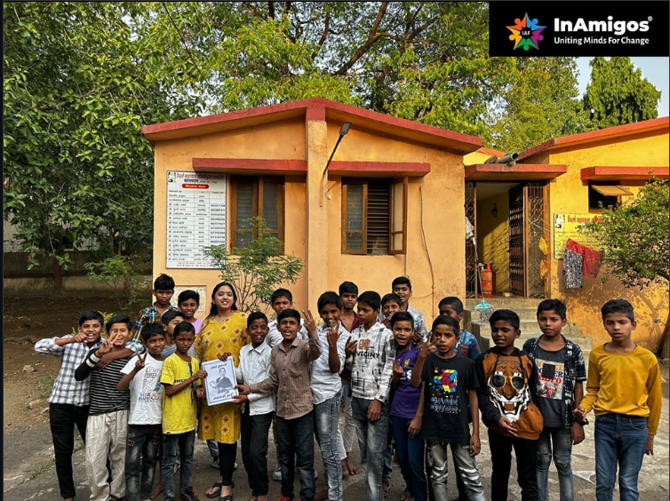
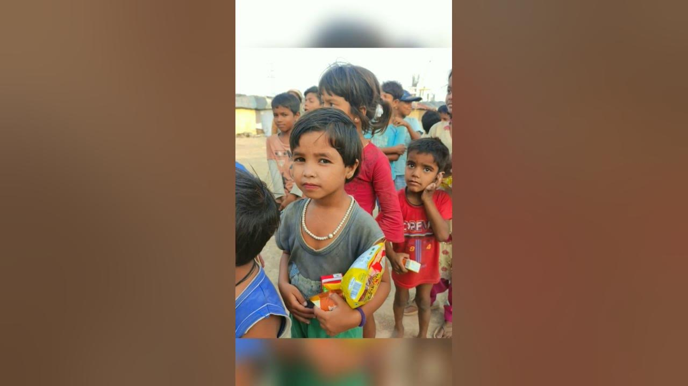
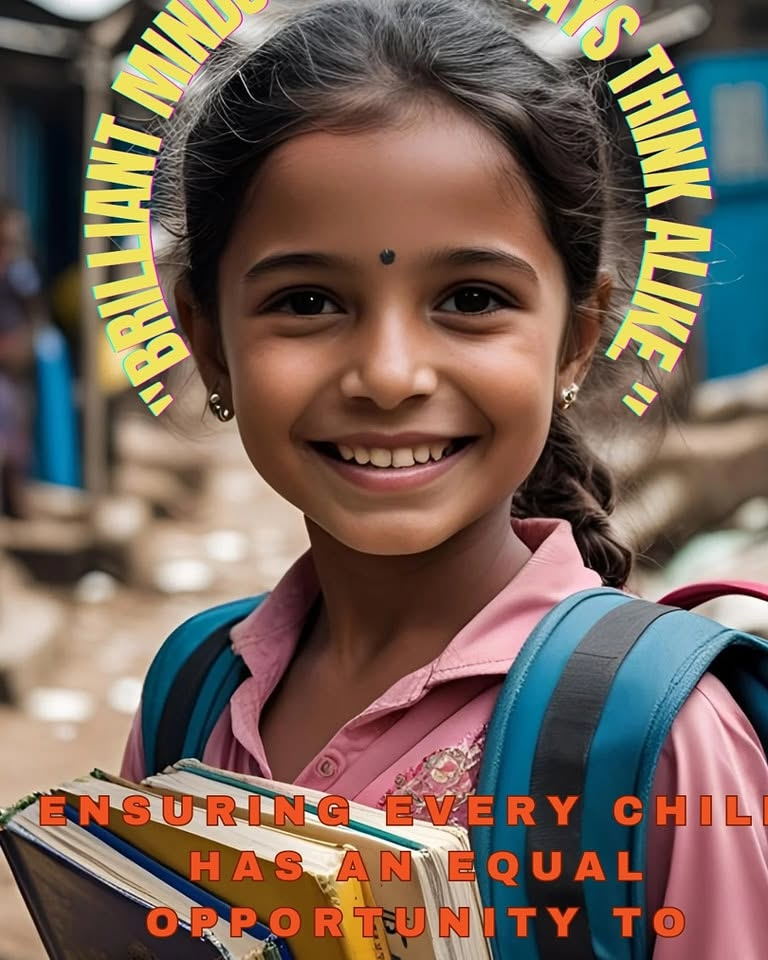
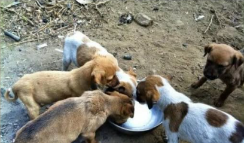

Our Work in Action






InAmigos Foundation is committed to education, women empowerment, environmental sustainability, animal welfare and community development.
InAmigos Foundation was founded on September 23, 2020, by Mr. Govind Shukla (Founder & CEO).
It is a Section 8 registered non-profit organization, licensed by the Central Government. It has its base at Chhattisgarh.
It holds 80G & 12A certifications, ensuring transparency, accountability and tax-exempt benefits for donors.
Our foundation is also CSR-1 registered, allowing us to collaborate with corporate partners for impactful Corporate Social Responsibility (CSR) initiatives.
Additionally, we are NITI Aayog registered, aligning our work with national development goals and hold the prestigious IAF ISO 9001:2015 certification, signifying our commitment to maintaining high-quality standards in operations and service delivery.
Our Key Initiatives
1. Project Seva – Providing food and clothing to the underprivileged.
2. Project Bachpanshala – Ensuring quality education for underprivileged children.
3. Project Jeev – Animal welfare, including rescue, protection and feeding.
4. Project Udaan – Women empowerment through skill development and financial independence.
5. Project Prakriti – Environmental conservation and sustainability efforts.
6. Project Vikas – Enhancing employability through skill development programs.
With a strong network of dedicated professionals, volunteers and corporate partners, we work tirelessly to bring positive change in society.
Our social media platforms actively showcase our impact, keeping our supporters informed and engaged.
At InAmigos Foundation, we believe in the power of collective action. Every contribution is directed towards essential causes such as food distribution, education, women empowerment, animal welfare, environmental sustainability and social inclusion programs across India. Join Us in Making a Difference Together, we can create a more inclusive, compassionate and empowered society.
Education support for children.
Women empowerment initiative. Empowered 900+ Girls through digital campaigns
Animal welfare activities. Feeding 50+ Animals Daily
Tree plantation and environment awareness. 20000+ Trees planted
Food distribution drives. 50,000+ meals distributed.
Internship and skill development programs.
Beneficiaries
Campaigns
Volunteers
Projects




Volunteer, Donate or Spread Awareness.
Become a Volunteer